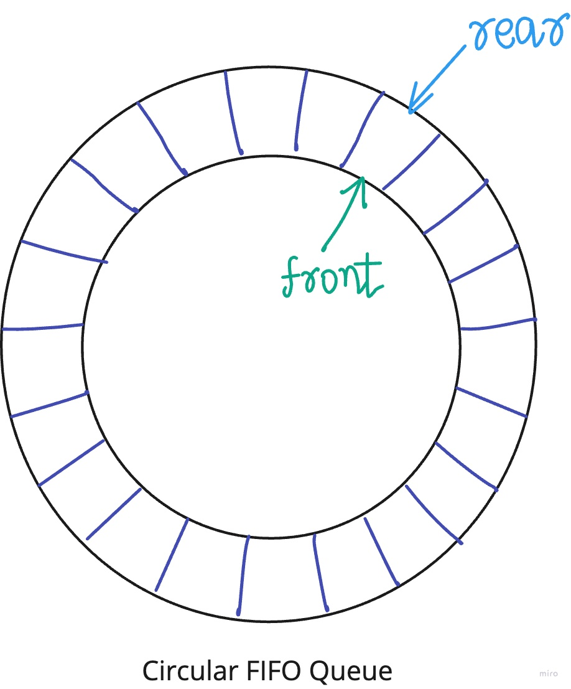

Producer-consumer problem
In the producer-consumer problem, we have two classes of threads, producers and consumers and a buffer containing a fixed number of slots. A producer thread attempts to put something into the next empty buffer slot, a consumer thread attempts to take something out of the next occupied buffer slot. The synchronization conditions are that producers cannot proceed unless there are empty slots and consumers cannot proceed unless there are occupied slots. The problem occurs because of the different rates at which producers deposit and consumers exhaust data.
This is a classic, but frequently occurring synchronization problem. For example, the heart of the implementation of UNIX pipes is an instance of this problem.
Ring buffer
Consider a single, fixed-size buffer as if it were connected end-to-end, such that the oldest entry is processed first. This is a circular FIFO queue.
What do we use SPSC FIFO queues for? In the industry, you often have a pipeline of processes. For example, you have one thread reading from sockets, another thread that handles the messages from the sockets and maybe processes them and produces a result and a third thread writes a response to the network. Those can be connected by SPSC FIFO queues. There’s a couple of advantages to this. All these advantages and disadvantages are subject to measurement, so always measure. It may improve the throughput over just a single thread doing all \(3\) of these operations, in fact, I’ll be surprised if it didn’t. It also should improve the resiliency of the application to spikes in message traffic. Some of the disadvantages are that you have to manage 3 threads and it probably uses more memory, because each of the FIFO queues needs place to store its messages.
We all have come across circular FIFO queues. We usually have two cursors - rear and front. Items are pushed to the rear of the queue and popped off the front of the queue.

When we push(42) into the FIFO queue, the rear cursor is incremented and each time we pop(), the front cursor is incremented. When the front cursor and the rear cursor are no longer equal, the FIFO queue is no longer empty. Eventually, we push so many values in, that the FIFO queue fills up. At this point, the rear cursor is capacity greater than the front cursor.
The FIFO queue empty and queue full conditions use the remainder operator %. Division uses \(20\) to \(30\) cycles so it is a bit expensive. Another approach is to constrain the buffer size to an integral power of \(2\), and use the bitwise & operator and that’s a \(1\) cycle operation.
Implementation notes
#include <iostream>
#include <queue>
#include <thread>
#include <array>
#include <numeric>
namespace dev {
template<typename T>
class ring_buffer {
private:
enum {min_capacity = 128};
T* ring;
int m_front;
int m_rear;
int m_capacity;
public:
/* Default constructor*/
ring_buffer()
: m_front{0}
, m_rear{0}
, ring{nullptr}
, m_capacity{0}
{
ring = operator new(min_capacity);
m_capacity = min_capacity;
}
ring_buffer(int capacity)
: m_front{ 0 }
, m_rear{ 0 }
, ring{ nullptr }
, m_capacity{ 0 }
{
ring = static_cast<T*>(operator new(capacity));
m_capacity = capacity;
}
/* Copy constructor - Perform a deep copy */
ring_buffer(const ring_buffer& other)
: m_front{ 0 }
, m_rear{ 0 }
, ring{ nullptr }
, m_capacity{ 0 }
{
/* Allocation */
ring = static_cast<T*>(operator new(other.m_capacity));
m_capacity = other.m_capacity;
/* Construction */
for (int i{0}; i < other.size(); ++i)
{
new (&ring[i]) T(other[i]);
}
}
/* Swap */
void swap(ring_buffer& other) noexcept{
std::swap(m_front, other.m_front);
std::swap(m_rear, other.m_rear);
std::swap(m_capacity, other.m_capacity);
std::swap(ring, other.ring);
}
friend void swap(ring_buffer& lhs, ring_buffer& rhs)
{
lhs.swap(rhs);
}
/* Copy assignment */
ring_buffer& operator=(const ring_buffer& other)
{
ring_buffer temp{ other }; //Copy-construct
return std::exchange(*this, temp);
}
T& front() {
if (empty())
throw std::exception("buffer is empty!");
return ring[m_front % m_capacity];
}
T& back() {
if (empty())
throw std::exception("buffer is empty!");
return ring[(m_rear - 1) % m_capacity];
}
T& operator[](int i) {
if (empty())
throw std::exception("buffer is empty!");
return ring[(m_front + i) % m_capacity];
}
bool empty() {
return m_front == m_rear;
}
bool full() {
return size() == capacity();
}
void push(const T& value) {
if (full())
throw std::exception("buffer is full!");
new (&ring[m_rear % m_capacity]) T(value); // [C1]
std::cout << "\n" << "pushed " << value << " to buffer";
++m_rear;
}
void push(T&& value) {
if (full())
throw std::exception("buffer is full!");
new (&ring[m_rear % m_capacity]) T(std::move(value));
std::cout << "\n" << "pushed " << value << " to buffer";
++m_rear;
}
void pop() {
if (empty())
throw std::exception("buffer is empty!");
T value = front(); // [C2]
ring[m_front % m_capacity].~T();
std::cout << "\n" << "popped " << value << " off buffer";
++m_front;
}
int capacity() const{
return m_capacity;
}
int size() const {
return (m_rear - m_front);
}
void print() {
for (int i{ 0 };i < size();++i) {
std::cout << "\n" << "ring[" << i << "] = " << (*this)[i];
}
}
};
}
int main()
{
dev::ring_buffer<int> buffer(64);
std::thread producer(
[&]() {
for (int i{ 1 };i <= 1000;++i)
{
try {
buffer.push(i);
}
catch (std::exception e) {
std::cout << "\n" << "buffer full!";
}
}
}
);
std::thread consumer(
[&]() {
for (int i{ 1 };i <= 1000;++i)
{
try {
int front = buffer.front();
buffer.pop();
std::this_thread::sleep_for(std::chrono::microseconds(1));
}
catch (std::exception e) {
std::cout << "\n" << "buffer empty!";
}
}
}
);
producer.join();
consumer.join();
std::cout << "\nFinished execution";
}Running the above code-snippet, we find that there are several occassions when there are buffer overflows or underflows, and there are also data races.